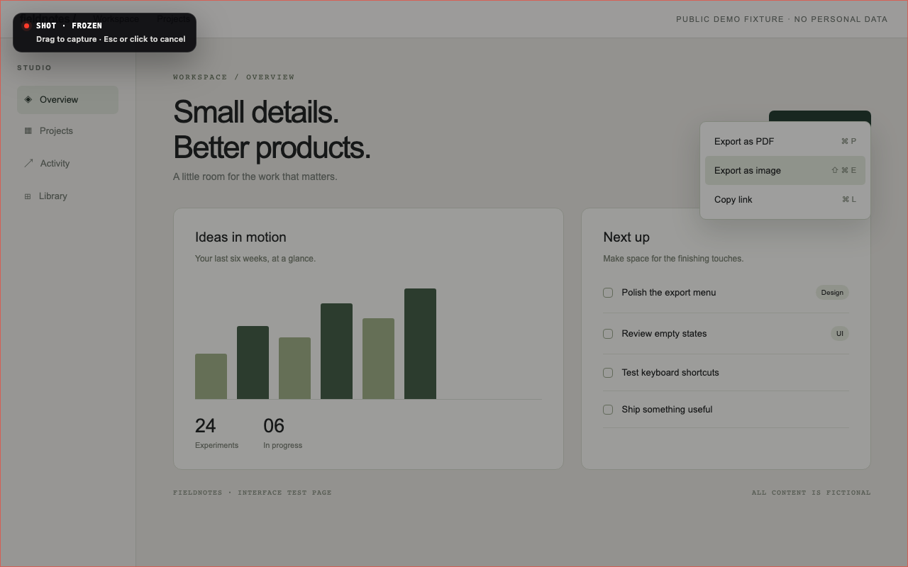
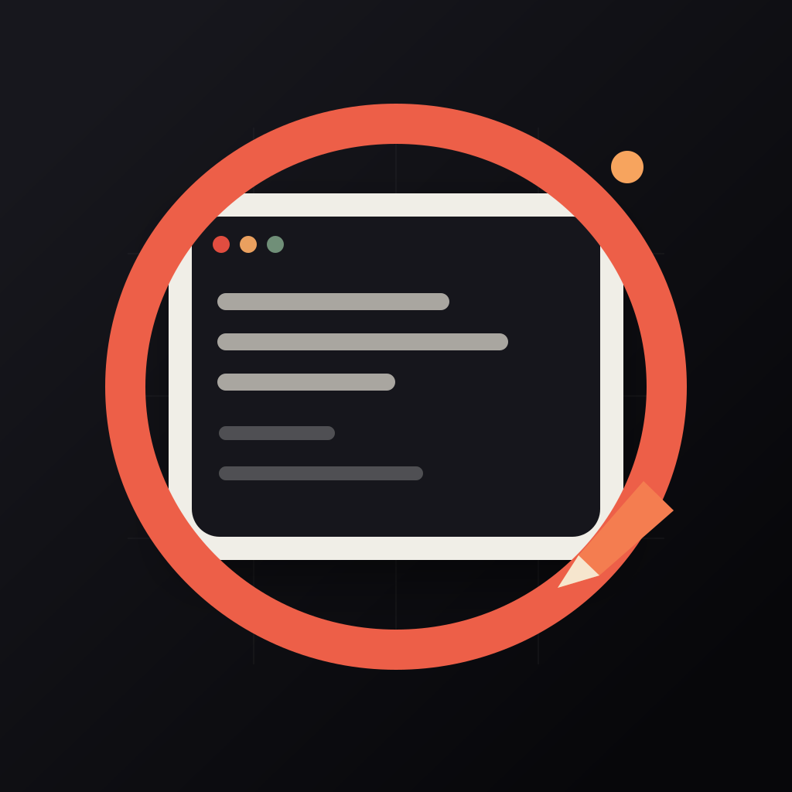
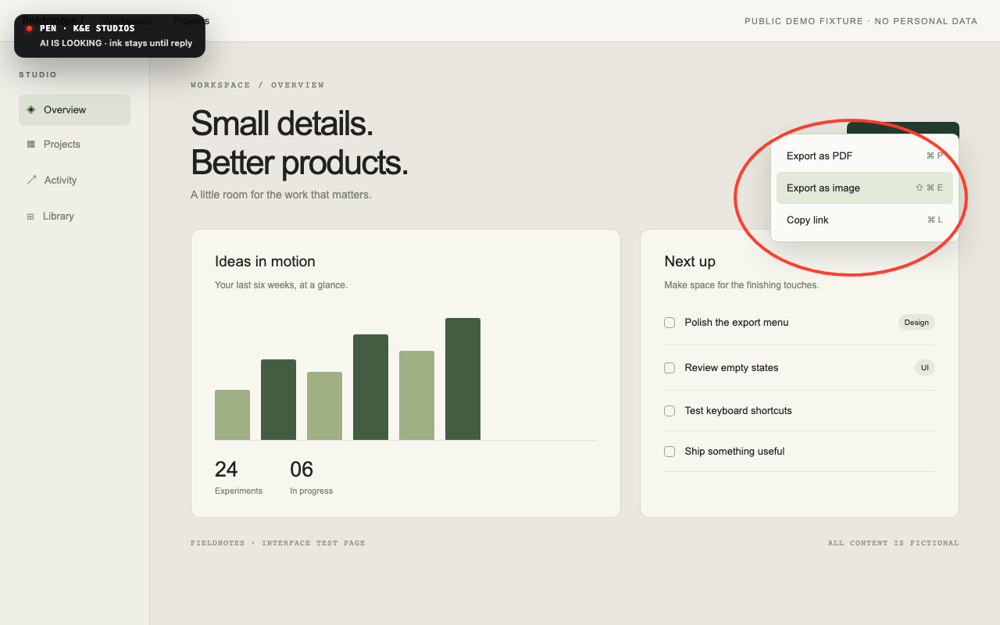
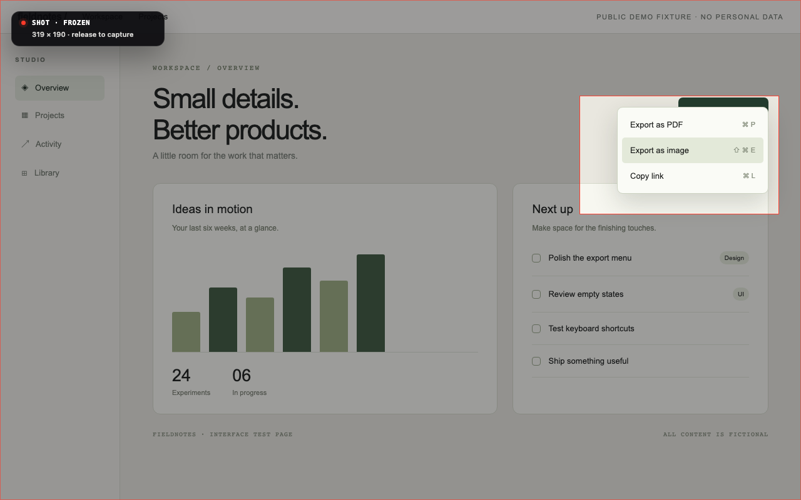

01 / FREEZE

Keep the moment.
Hold still. The screen freezes with the menu intact. Available on macOS and Windows.

KE PenCircle what matters on your desktop.
Give your AI the exact visual context.

A menu. A tooltip. That fleeting hover state. Hold the middle mouse button for half a second and freeze the screen before it disappears.

Hold still. The screen freezes with the menu intact. Available on macOS and Windows.

Drag a region. The crop goes straight to your clipboard, ready to paste into your work.
Open Pen, circle anything on screen, then ask your MCP-capable AI to “look at the pen.”
Capture and annotation are separate workflows. This visual tour uses the actual 0.6.0 renderer with pointer input over a public test fixture; it does not demonstrate native input interception or a live AI session. How these images were captured ↗
Local by default. Your provider, your choice. KE Pen has no account, telemetry, or built-in cloud backend. Your configured AI host may send MCP results to its provider. KE Shot uploads only when you configure your own endpoint and token. This Hugging Face Space is a static visual tour; it cannot access or capture your desktop.
Know before installing. Public CI macOS builds are ad-hoc signed and not notarized; the hold helper’s Accessibility approval may need to be renewed after an update. Windows builds are unsigned and may show SmartScreen. Linux needs X11 or XWayland; hold to capture is not available on Linux. On macOS, hold to capture also requires Accessibility permission for ke-pen-hold-helper.